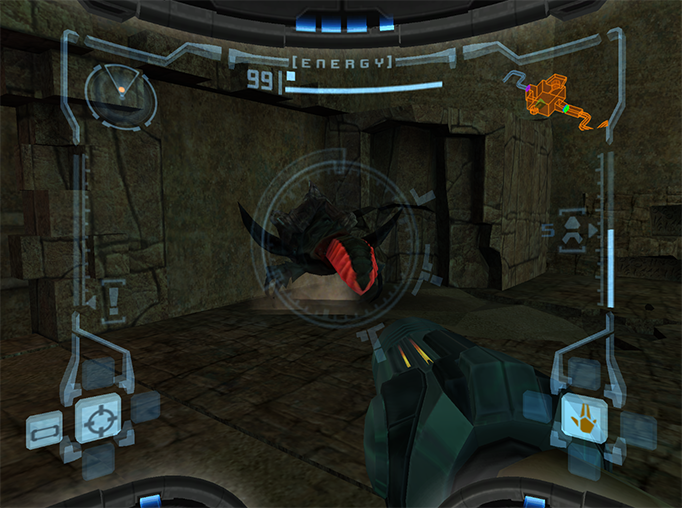

BOSS GUIDE
As you explore Tallon IV you will run into intense boss fights. These fights can be very overwhelming for new players. Bellow are quick and easy guides on how to defeat every boss and mini-boss in the game.
Parasite Queen
The first and easiest boss. The Parasite Queen is in the center of the room and does not move. Some shields are going to show up to block your attacks. First, use the Scan Visor on the Parasite Queen to make the lock-on system target the head. There is a hole in the shields, align yourself with it and start attacking. (See Fg. 1) You should use the charge beam repeatedly. The Parasite Queen only has one attack. To dodge the attack, dash right before she fires. (See Fg. 2) After some time the shields will begin spining randomly. When this happens, start moving in the oposite way. (See Fg. 3) While moving this way, repeatedly fire uncharged shots. Some shots might make it through the shields. Soon the shields will reallign. If you moved correctly the shield will realign right in front of you. Continue this prosses untill the Queen is dead. Once the Queen is dead you are not safe yet. You now have 7 minutes to escape to frigate. (See Fg. 4) Don't panic, you have plenty of time and the path is linear.
Hive Drone
The Hive Drone is a mini-boss guarding the Missile Launcher. At the start of the fight, the drone is going to release some War Wasps. The wasps then circle around you. Hold still and keep an eye on your radar. (See Fg. 1) At some point some of the wasps will stop and get ready for an attack. You will see this on your radar. Quickly turn to them and kill as many as you can. When all wasps are dead quickly turn back to the drone. A weak point is visible, shoot at it as fast as you can! (See Fg. 2) If the drone rotates, you did enough damage. Next the drone will release more wasps. Continue killing wasps and shooting the drone until the fight is over.
Beetle Swarm
The Beetle swarm is another mini-boss guarding the Morph Ball. You can find this mini-boss in Ruised Shrine. At the start of the fight a lot of beetles start to swarm you. (See Fg. 1) Keep moving and use missiles. The splash damage will be very effective. Save at least 2 missiles for later. When all the beetles are dead, a large Plated Beetle will attack. (See Fg. 2 ) Keep an eye on the beetle and wait for it to signal its attack. Once it does, quickly dash out of the way. You will see a glowing red weak spot. (See Fg. 3) Fire missiles for maximum damage. It only takes 2 missiles to kill it.
